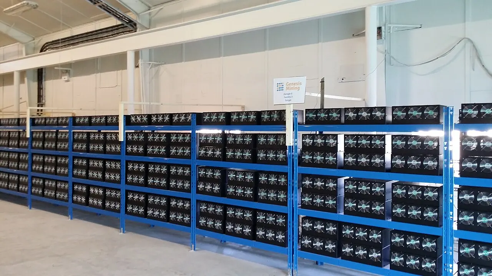

비트코인 채굴을 이야기할 때 사람들은 먼저 코인 가격을 봅니다. 가격이 오르면 채굴 기업도 좋아 보이고, 가격이 내리면 모두 위험해 보입니다. 하지만 실제 채굴 사업은 그렇게 단순하지 않습니다. 같은 비트코인 가격에서도 어떤 회사는 현금을 만들고, 어떤 회사는 장비를 꺼야 합니다. 차이는 전력 계약, 장비 효율, 부채, 냉각 비용, 운영 위치에서 나옵니다.
이 글은 특정 코인이나 채굴 기업의 매수를 권하는 글이 아닙니다. 채굴 산업은 가격 변동, 규제, 전력망, 장비 노후화, 자본 조달 위험이 큰 분야입니다. 특히 공개 채굴 기업은 비트코인 가격과 주식시장 심리를 동시에 받기 때문에 변동성이 큽니다. 채굴을 투자 대상으로 볼 때는 “비트코인이 오를까”보다 “가격이 흔들려도 이 회사가 버틸 수 있나”를 먼저 물어야 합니다.
채굴의 본질은 전기를 계산력으로 바꾸는 사업입니다. 더 싼 전기를 오래 확보하고, 더 효율적인 장비로 같은 전력에서 더 많은 해시를 만들고, 네트워크 난이도가 올라가도 비용을 낮게 유지하는 회사가 유리합니다. 그래서 채굴 기업의 생존력은 차트보다 전력 계약서와 설비 운영표에 더 가깝습니다.
해시가격이 매출의 날씨입니다

채굴자가 매일 체감하는 지표는 비트코인 가격만이 아닙니다. 해시가격은 일정한 계산력으로 얼마나 많은 수익을 얻을 수 있는지 보여주는 지표입니다. 비트코인 가격이 올라도 네트워크 해시레이트와 난이도가 더 빠르게 오르면 채굴자 몫은 줄어들 수 있습니다. 반대로 가격이 크게 오르지 않아도 경쟁 장비가 꺼지면 남은 채굴자의 수익성이 나아질 수 있습니다.
해시가격은 채굴 산업의 날씨와 비슷합니다. 좋을 때는 오래된 장비도 돌아가고, 나쁠 때는 최신 장비도 전기요금 앞에서 멈춥니다. 이 지표가 내려가면 가장 먼저 전력 단가가 높은 채굴장과 효율이 낮은 장비가 압박을 받습니다. 그래서 채굴 기업을 볼 때 보유 비트코인 수량만큼이나 해시가격 대비 현금 원가를 봐야 합니다.
반감기 이후에는 같은 블록을 찾아도 보상이 줄어듭니다. 채굴자는 더 효율적인 장비를 쓰거나, 더 싼 전기를 확보하거나, 수수료 수입이 늘어나기를 기대해야 합니다. 어느 쪽도 쉬운 일이 아닙니다. 반감기는 공급 이야기이면서 동시에 운영 비용 시험입니다. 가격 상승이 모든 채굴자를 구하지는 않습니다.
전기요금은 원가가 아니라 운명입니다
채굴장에서 전력 비용은 단순한 비용 항목이 아닙니다. 사업의 생사선입니다. 전기요금이 낮고 장기 계약이 안정적이면 회사는 약세장에서도 장비를 계속 돌릴 여지가 있습니다. 반대로 단기 시장 가격에 노출되어 있거나 피크 시간 요금이 높으면 수익성은 빠르게 흔들립니다. 같은 장비를 써도 전력 계약에 따라 결과가 달라집니다.
좋은 전력 계약은 싼 가격만 의미하지 않습니다. 계약 기간, 전력 공급 안정성, 중단 가능 조건, 지역 규제, 송전 제약, 냉각에 필요한 추가 비용까지 봐야 합니다. 일부 채굴장은 전력망 수요가 높은 시간에 전기를 덜 쓰고 보상을 받는 방식으로 수익을 보완하기도 합니다. 이 경우 채굴 기업은 단순한 코인 생산자가 아니라 전력망 유연성 제공자처럼 움직입니다.
전력 계약이 약한 회사는 비트코인 가격 상승기에만 좋아 보일 수 있습니다. 가격이 높을 때는 원가 문제가 가려지지만, 해시가격이 내려가면 바로 드러납니다. 채굴 기업의 발표 자료에서 전력 단가와 가동률, 전력 중단 보상, 지역별 설비 비중을 확인해야 하는 이유가 여기에 있습니다.
장비 효율은 시간이 갈수록 닳습니다
채굴기는 시간이 지나면 낡습니다. 물리적으로 고장 나서만이 아니라, 더 효율적인 새 장비가 나오면 같은 전기를 쓰고도 경쟁력이 떨어집니다. 채굴 장비의 효율은 보통 테라해시당 전력 소모로 비교합니다. 숫자가 낮을수록 같은 계산력을 더 적은 전기로 만들 수 있습니다. 전기요금이 높은 환경에서는 이 차이가 생존을 가릅니다.
장비 교체는 공짜가 아닙니다. 새 채굴기를 사려면 큰 자본이 필요하고, 배송과 설치, 전력 배선, 냉각 설비도 함께 따라옵니다. 장비 가격이 비쌀 때 무리하게 사면 다음 약세장에서 부채 부담이 커질 수 있습니다. 반대로 너무 늦게 교체하면 경쟁력이 떨어집니다. 채굴 기업은 장비 투자 타이밍을 잘못 잡으면 상승장에서도 현금이 부족해질 수 있습니다.
냉각 방식도 중요해지고 있습니다. 공랭식, 수랭식, 침지 냉각은 각각 비용과 유지보수 부담이 다릅니다. 더운 지역에서는 냉각 비용이 전력 비용을 더 키울 수 있고, 먼지와 습도는 고장률을 높입니다. 채굴장 위치가 단지 전기요금만으로 결정되지 않는 이유입니다. 낮은 전기요금과 안정적인 운영 환경이 함께 있어야 합니다.
AI 데이터센터와 전력 경쟁이 겹칩니다
관련 영상
In 2 Years the Cost to PRODUCE 1 BTC will be $120k
최근 채굴 기업이 새로 마주한 경쟁자는 다른 채굴자만이 아닙니다. 인공지능 데이터센터가 전력과 부지를 빠르게 흡수하고 있습니다. 전력망 접속이 쉬운 지역, 냉각이 유리한 지역, 토지와 변전 설비가 있는 곳은 채굴 기업과 데이터센터가 동시에 찾는 자리입니다. 이 경쟁은 전력 계약 가격과 부지 가치에 영향을 줄 수 있습니다.
일부 채굴 기업은 자체 전력 인프라와 부지를 활용해 고성능 컴퓨팅 사업으로 확장하려 합니다. 이 전략은 매력적일 수 있지만 쉬운 전환은 아닙니다. AI 데이터센터는 전력뿐 아니라 네트워크, 고객 계약, 안정성, 보안, 장비 투자, 운영 신뢰가 필요합니다. 채굴기가 있던 공간에 그래픽처리장치를 넣는다고 바로 같은 사업이 되는 것은 아닙니다.
채굴 기업을 평가할 때는 두 가지 길을 나눠 봐야 합니다. 하나는 낮은 전력 단가로 비트코인 생산 원가를 낮추는 길입니다. 다른 하나는 전력 인프라를 활용해 다른 컴퓨팅 수요로 매출을 넓히는 길입니다. 어느 쪽이든 핵심은 가격 상승 기대가 아니라 계약의 질입니다. 전기가 싸고 오래 확보되어 있으며, 장비 투자와 부채가 감당 가능한 회사만 긴 사이클을 버틸 수 있습니다.
비트코인 채굴은 화려한 이야기를 만들기 쉽습니다. 그러나 현장의 숫자는 차갑습니다. 해시가격, 전기요금, 장비 효율, 가동률, 부채 만기, 현금 보유액이 맞지 않으면 가격 상승 전까지 버티지 못할 수 있습니다. 채굴 산업을 읽는 가장 현실적인 질문은 “비트코인이 얼마까지 갈까”가 아니라 “전력 계약이 다음 겨울까지 이 회사를 지켜줄 수 있나”입니다.